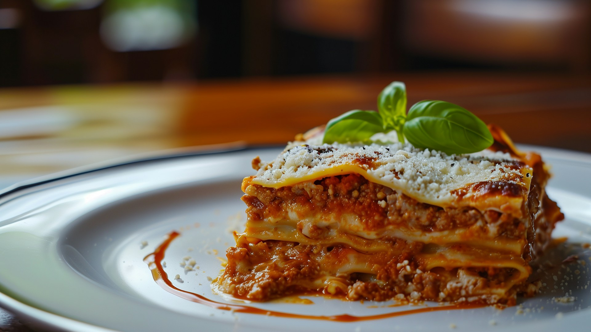

Home
Spinach Lasagna

Description
A spinach lasagna recipe made with spinach and two different types of
cheese—ricotta and mozzarella.
The content included here has been adapted (or more accurately, copied)
from
allrecipes.com. The original recipe was submitted by Robbie Rice.
Check out the original recipe on
the allrecipes website.
Image credit: Emanuel Ekström
Ingredients
- 15 lasagna noodles
- 2 tablespoons olive oil
- 1 cup chopped onions
- 1 tablespoon minced garlic
- 2 cups fresh spinach
- 3 cups ricotta cheese
- 1 egg
- 1 teaspoon salt
- 1 teaspoon dried oregano
- 1 teaspoon dried basil leaves
- 1/2 teaspoon ground black pepper
- 3 cups shredded mozzarella cheese
- 3 cups tomato pasta sauce
- 1 cup grated parmesan cheese
-
Gather all ingredients. Preheat the oven to 350 degrees F (175 degrees
C).
-
Bring a large pot of lightly salted water to a boil. Add lasagna noodles
and cook for 8 to 10 minutes or until al dente. Then, drain the water.
-
Meanwhile, heat olive oil in a skillet over medium-high heat. Add
mushrooms, onions, and garlic and cook until onions are tender; drain
excess liquid and cool.
-
At the same time, bring a small pot of water to a boil; add spinach and
simmer for 5 minutes. Drain and cool slightly; squeeze out any excess
liquid and finely chop.
-
Combine ricotta cheese, Romano cheese, egg, salt, oregano, basil, and
pepper in a bowl.
-
Add cooled mushroom mixture and spinach; beat with an electric mixer on
low speed for 1 minute.
- Lay 5 lasagna noodles in the bottom of a 9x13-inch baking dish.
-
Spread 1/3 of the ricotta-spinach mixture over noodles, then sprinkle
with 1 cup mozzarella cheese and 1/3 cup Parmesan cheese.
-
Spread 1 cup pasta sauce over top. Repeat layers two more times, then
cover with aluminum foil.
-
Bake in the preheated oven for 1 hour. Cool 15 minutes before serving.